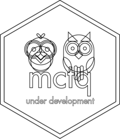

mctq 
Overview
mctq provides a complete and consistent toolkit to process and analyze Munich Chronotype Questionnaire (MCTQ) data in R for all of its three versions (standard, micro, and shift).
Please note that this package have not been peer reviewed yet. We plan to submit it to rOpenSci in March 2021 . We also plan to write a article about it and to add it to CRAN.
Today MCTQ is one of the best quantitative and validated methods available to assess peoples’ sleep behavior and to correlate circadian features of human biology with other factors (like geographic factors). It has become a indispensable tool for sleep and chronobiology scientists when more objective measures (like actigraphy) are not viable.
The questionnaire was presented by Till Roenneberg (LMU Munich), Anna Wirz-Justice (UPK Basel), and Martha Merrow (LMU Munich) in 2003. Since them, it has been progressively optimized and translated to 13 languages.
You can learn more about MCTQ at https://www.thewep.org/documentations/mctq.
Wait, a R package for a questionnaire?
MCTQ may look like a simple questionnaire, but it analysis requires a lot of date/time manipulation. That can be real challenging, especially if you’re dealing with a large set of data.
The main advantage to use the mctq package in your research is that you will have reliable tools, thoroughly tested, at your disposition, made and supported by a sleep science research group (GIPSO) from a well know university (USP). mctq also helps with research reproducibility, since it’s a free and open source package that anyone can find and use.
This package is also equipped with several utility functions that allows you to easily convert and visualize your MCTQ data. It also provides fictional datasets for testing and learning purposes.
Installation
The first stable mctq version is already out, we hope that it will be available on CRAN soon. Until that moment comes, you can install the development version from GitHub with:
# install.packages("devtools")
devtools::install_github("gipsousp/mctq", dependencies = TRUE)Usage
mctq works with a set of object classes specially created to hold time values. This classes can be found in the hms and lubridate package from tidyverse. If your data do not conform to the object classes required, don’t worry, just use convert() to convert it. You can always convert it back if you want.
Here are some examples of how to convert your data using convert():
# From decimal hours to `hms`
convert(6.5, "hms", input_unit = "H")
#> 06:30:00
# From radians to `Duration`
convert(1.308997, "Duration", input_unit = "rad")
#> [1] "18000s (~5 hours)"
# From radians to decimal minutes
convert(0.2617994, "numeric", input_unit = "rad", output_unit = "M")
#> [1] 60
# From `character` `HMS` to `Duration`
convert("19:55:17", "Duration", orders = "HMS")
#> [1] "71717s (~19.92 hours)"
# From `character` `HM AM/PM ` to `hms`
convert("10:00 PM", "hms", orders = "IMp")
#> 22:00:00Basic MCTQ computation
After your data is all set, just use the mctq functions below to process it.
Note that mctq uses a similar naming scheme as those used in the MCTQ articles. That make it easy to find and apply any computation necessary.
-
fd()compute MCTQ work-free days -
so()compute MCTQ sleep onset -
gu()compute MCTQ local time of getting out of bed -
sd()compute MCTQ sleep duration -
tbt()compute MCTQ total time in bed -
ms()compute MCTQ local time of mid-sleep -
napd()compute MCTQ nap duration (only for MCTQ Shift) -
sd24()compute MCTQ 24h sleep duration (only for MCTQ Shift)
Example:
# Local time of preparing to sleep on workdays
sprep_w <- c(hms::parse_hms("23:45:00"), hms::parse_hms("02:15:00"))
# Sleep latency or time to fall asleep after preparing to sleep on workdays
slat_w <- c(lubridate::dminutes(30), lubridate::dminutes(90))
# Local time of sleep onset on workdays
so(sprep_w, slat_w)
#> 00:15:00
#> 03:45:00MCTQ analysis
For computations combining workdays and work-free days, use:
-
sd_week()compute MCTQ average weekly sleep duration -
sd_overall()compute MCTQ overall sleep duration (only for MCTQ Shift) -
sloss_week()compute MCTQ weekly sleep loss -
le_week()compute MCTQ average weekly light exposure -
msf_sc()compute MCTQ chronotype or corrected local time of mid-sleep on work-free days -
sjl()andsjl_rel()compute MCTQ social jet lag -
sjl_weighted()compute MCTQ absolute social jetlag across all shifts (only for MCTQ Shift)
Example:
# Local time of mid-sleep on workdays
msw <- c(hms::parse_hms("02:05:00"), hms::parse_hms("04:05:00"))
# Local time of mid-sleep on work-free days
msf <- c(hms::parse_hms("23:05:00"), hms::parse_hms("08:30:00"))
# Relative social jetlag
sjl_rel(msw, msf)
#> [1] "-10800s (~-3 hours)" "15900s (~4.42 hours)"New features
As of today, mctq offers solutions for all variables proposed by the original authors. Because MCTQ is actively used by a sleep research group, we have developed different tools and analysis that can help you with you research. We plan to add new features to the package in the future.
Citation
If you use mctq in your research, please consider citing it. We put a lot of work to build and maintain a free and open source R package. You can find mctq citation below.
citation("mctq")
#>
#> To cite mctq in publications use:
#>
#> Vartanian D., Benedito-Silva, A. A., Pedrazzoli, M. (2021). mctq: a R
#> package for the Munich ChronoType Questionnaire (MCTQ). Retrieved
#> from https://gipsousp.github.io/mctq/ .
#>
#> A BibTeX entry for LaTeX users is
#>
#> @Unpublished{,
#> title = {mctq: a R package for the Munich ChronoType Questionnaire (MCTQ)},
#> author = {Daniel Vartanian and Ana Amelia Benedito-Silva and Mario Pedrazzoli},
#> year = {2021},
#> url = {https://gipsousp.github.io/mctq/},
#> note = {Lifecycle: maturing},
#> }Contributing
mctq is a community project, anyone and everyone is welcome to contribute. Take a moment to review our Guidelines for Contributing.
Please note that mctq is released with a Contributor Code of Conduct. By contributing to this project, you agree to abide by its terms.